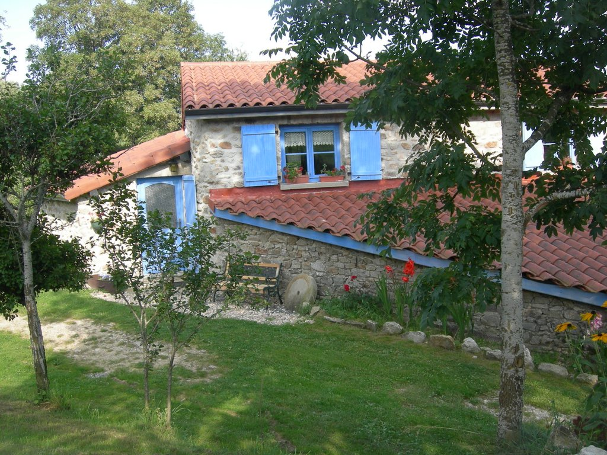

Gîte de France 3 épis à Chalmazel
Pour vos vacances, Pascale et Robert sont heureux de vous accueillir dans leur gîte rural labellisé écogîte .D'une superficie de 75m² pour 6 personnes (3 chambres + 1 canapés clic-clac 2 personnes additionnelles). Non fumeur.
Poussez la porte de cette ferme familiale restaurée en matériaux écologiques pour l'isolation, le crépis, les peintures, la colle, les revêtements sol, privilégiant le bois comme matériau de construction pour la préservation de l’environnement.
Dans les Monts du Forez, à Chalmazel, au hameau de la Combe, là où s’arrête la route à 1000m d’altitude en un lieu calme et reposant, à 2 Km du village.
Les Monts du Forez, les plus beaux paysages du Massif Central, montagne pastorale, terre d’évasion et de découvertes. Un espace rural préservé où les « Jasseries » (Fermes d'altitude) témoignent de la vie d’estive d’antan.
L’été en randonnée pédestre ou VTT parmi les plateaux des Hautes Chaumes où domine Pierre sur Haute 1642m, barrière avec nos amis Auvergnats. L’hiver et ses pistes de ski alpin.
Vous apprécierez les spécialités locales: charcuterie, fromage la fourme de Montbrison, le pain noir, le patia, tartes aux myrtilles.
 |